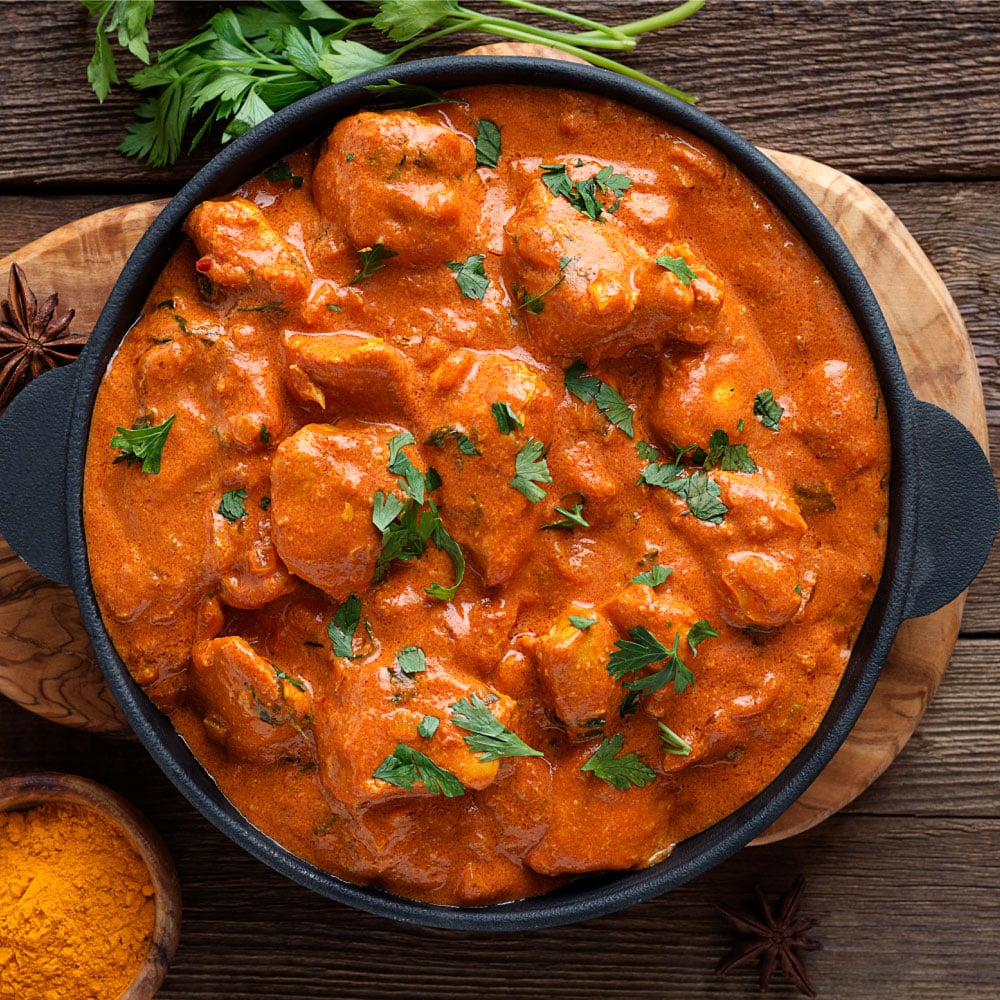

CHICKEN CURRY
Chicken curry is a popular dish that can be found in many cultures.
It is usually made with a mix of curry spices, chicken, onions, garlic,
and tomatoes. Depending on the region, other ingredients such as coconut
milk, yogurt, and different vegetables can be added. It is often served
with rice, naan bread, or chapati.

INGREDIENTS FOR CHICKEN CURRY
- 1 Kg Chicken Pieces
- 3 large onions Roughly Chopped(Paste)
- 2 large tomatoes Pureed
- 2 Tbsp garlic-ginger paste
- 2 Tsp coriander powder
- 2 Tsp Cumin Powder
- ½ Tsp turmeric powder
- ½ Tsp red chilli powder
- 1 Tsp Garam masala powder
- salt To Taste
- Coriander Chopped For Garnishing
HOW TO PREPARE CHICKEN CURRY
- Heat oil in a pan. Add onion paste and ginger-garlic paste.
Sauté this paste until golden brown.
- Add the tomato puree to the mixture in the pan. Then add the powder spices;
coriander powder, cumin powder, garam masala, red chilli powder, and turmeric powder.
Add salt as required and sauté the mixture well until the oil starts to separate.
- Add the chicken pieces to the pan and stir them well until they are coated in the mixture.
Cook them until they start changing colour and turn golden brown.
- Add 1 and ½ cup of water and stir the chicken. Cover the pan with a lid and let the
chicken cook until it turns tender.
- Once cooked, you can garnish the curry with chopped coriander and serve it hot with steamed
basmati rice, naan bread or chapati.